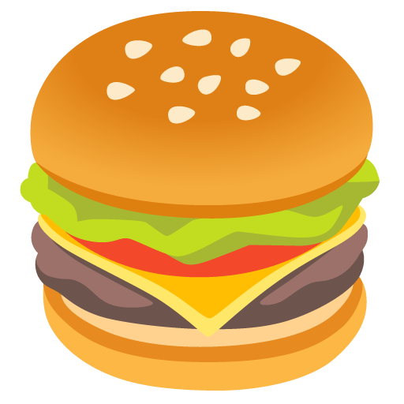

Status for Slack
Your Slack status,
on your wrist.
One tap on your Apple Watch. Clears itself when you're done.
10:09
Status
🍔
Lunch
1h
📅
In a meeting
1h
🎧
Focusing
2h
🚶
Away
Until 18:00
Lunch
Clears in 1 hour
📅
In a meeting
Clears in 1 hour
🎧
Focusing
Clears in 2 hours